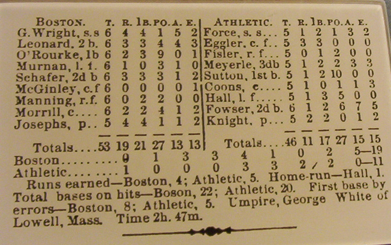

Sabermetrics
“As originally defined by Bill James in 1980, sabermetrics is ‘the search for objective knowledge about baseball.’ James coined the phrase in part to honor the Society for American Baseball Research.”
Box Scores

WAR
WAR (wins above replacement) gives an analyst a sense of how much a player contributes to the team versus a replacement-level player.
There are two main sources that calculate WAR, but with different formulas:
- Baseball Reference
- FanGraphs
bWAR
The WAR calculation over at Baseball Reference is called bWAR, and the overall scheme is
\[bWar = (P_{\text{runs}} - A_{\text{runs}}) + (A_{\text{runs}} - R_{\text{runs}})\]
whose terms are computed with factors such as
- batting runs
- baserunning runs
- runs added or lost due to grounding into double plays
- fielding runs
- positional adjustment runs
These factors are compared to the league average where a value of 0 represents an average player.
Batting runs depends on weighted runs above average
\[wRAA = \frac{wOBA - 0.320}{1.25}*(AB + BB + HBP + SF + SH)\]
where
\[wOBA = \frac{ \alpha_{1}*uBB + \alpha_{2}*HBP + \alpha_{3}*1B + \alpha_{4}*2B + \alpha_{5}*3B + \alpha_{6}*HR + \alpha_{7}*SB - \alpha_{8}*CS }{ AB + BB - IBB + HBP + SF }\]
fWAR
The FanGraphs formula for position players involves offense, defense, and baserunning.
\[fWAR = wRAA + UZR + position + \frac{20}{600}*PA\]
- runs above average
- ultimate zone rating
- ultimate base running
- park factors
Comparing Current Players
Aaron Judge
- bWAR: 10.6
- fWAR: 11.4
Shohei Ohtani
- bWAR: 9.6
- fWAR: 9.5
Sandy Alcantara
- bWAR: 8.1
- fWAR: 5.7
Comparing Careers
Aaron Judge
- bWAR: 36.9
- fWAR: 36.5
Shohei Ohtani
- bWAR: 24.7
- fWAR: 13.3
Sandy Alcantara
- bWAR: 16.7
- fWAR: 13.2